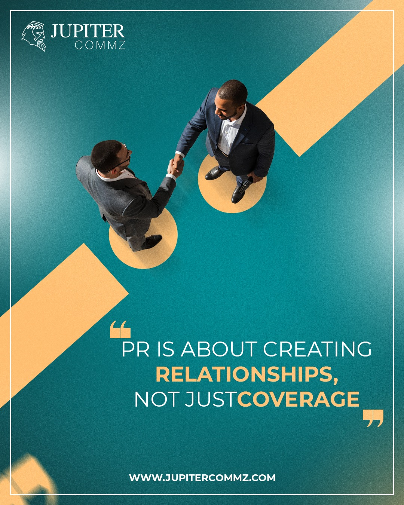

PR & COMMUNICATIONS · SOCIAL MEDIA · 2025
Making a PR brand feel bold, current, and impossible to ignore.
A curated selection of social media visuals created for Jupiter Commz—bringing one recognizable visual language across thought leadership, corporate storytelling, cultural moments, recruitment, and audience engagement.



THE DESIGN APPROACH
01One flexible identity, multiple communication needs.
The work keeps Jupiter’s visual presence recognizable through a consistent teal base, crisp white typography, warm gold accents, subtle grain, and framed compositions. The layout changes from post to post, while the brand still feels like one connected system.
BRAND VOICE & PR THINKING
Turning communication ideas into clear visual hooks.
Concept-led posts designed to make PR topics feel simple, direct, and visually memorable.


CORPORATE COMMUNICATION
Building trust through people, proof, and culture.
Visuals that communicate leadership, client confidence, company culture, and recruitment.


MOMENTS & OCCASIONS
Keeping seasonal communication inside the brand world.
Occasion-based designs that shift mood and imagery without losing Jupiter’s visual identity.


PROJECT TAKEAWAY
A consistent system does not mean repeating the same layout.
The strength of the project comes from using a stable visual language while changing the composition, scale, photography, and concept to match every message.
Explore more projects